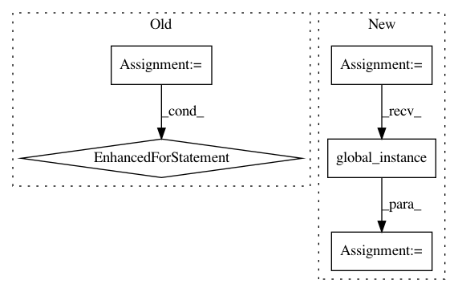

6e04032e366a11409ae73fd11a8b6c36170f70be,src/python/pants/backend/jvm/tasks/scaladoc_gen.py,ScaladocGen,create_scaladoc_command,#ScaladocGen#Any#Any#,26
Before Change
"-d", gendir,
]
for jvm_option in self.jvm_options:
if jvm_option.startswith("-D"):
command.append(jvm_option) // Scaladoc takes sysprop settings directly.
else:
command.append("-J{0}".format(jvm_option))
command.extend(self.args)
command.extend(sources)
return command
After Change
if not sources:
return None
scala_platform = ScalaPlatform.global_instance()
tool_classpath = scala_platform.compiler_classpath(self.context.products)
args = ["-usejavacp",
"-classpath", ":".join(classpath),
"-d", gendir]
In pattern: SUPERPATTERN
Frequency: 3
Non-data size: 5
Instances
Project Name: pantsbuild/pants
Commit Name: 6e04032e366a11409ae73fd11a8b6c36170f70be
Time: 2015-06-03
Author: john.sirois@gmail.com
File Name: src/python/pants/backend/jvm/tasks/scaladoc_gen.py
Class Name: ScaladocGen
Method Name: create_scaladoc_command
Project Name: pantsbuild/pants
Commit Name: 238143038b99eb087b513e7052a494bc3de6db75
Time: 2015-05-20
Author: john.sirois@gmail.com
File Name: src/python/pants/bin/goal_runner.py
Class Name: GoalRunner
Method Name: setup
Project Name: pantsbuild/pants
Commit Name: a368267b6b4cf50138ba567f582409ed31bf5db9
Time: 2018-10-26
Author: nh@baroquebobcat.com
File Name: contrib/python/src/python/pants/contrib/python/checks/tasks/checkstyle/checkstyle.py
Class Name: Checkstyle
Method Name: checker_pex